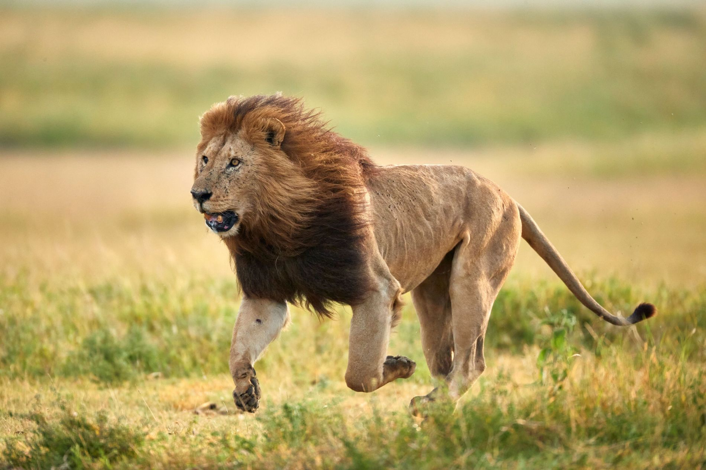
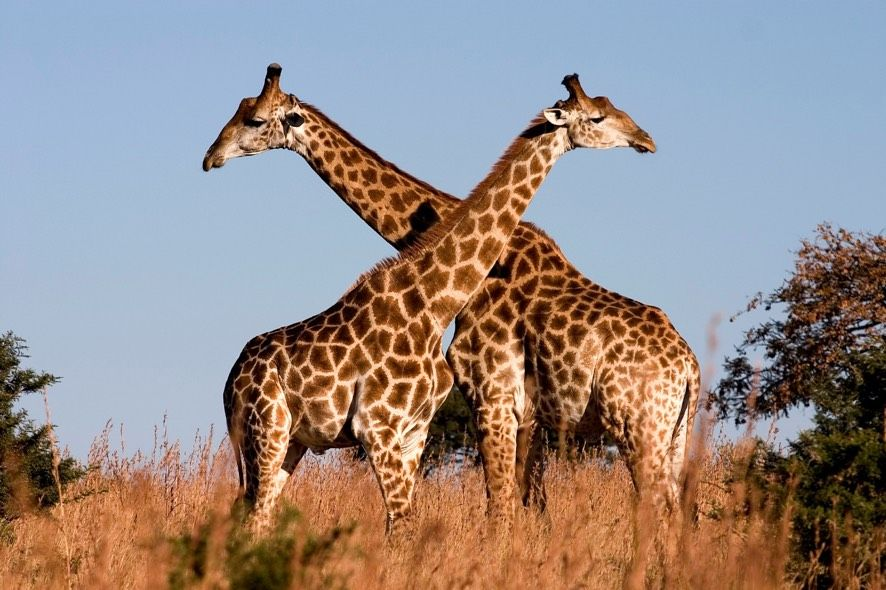
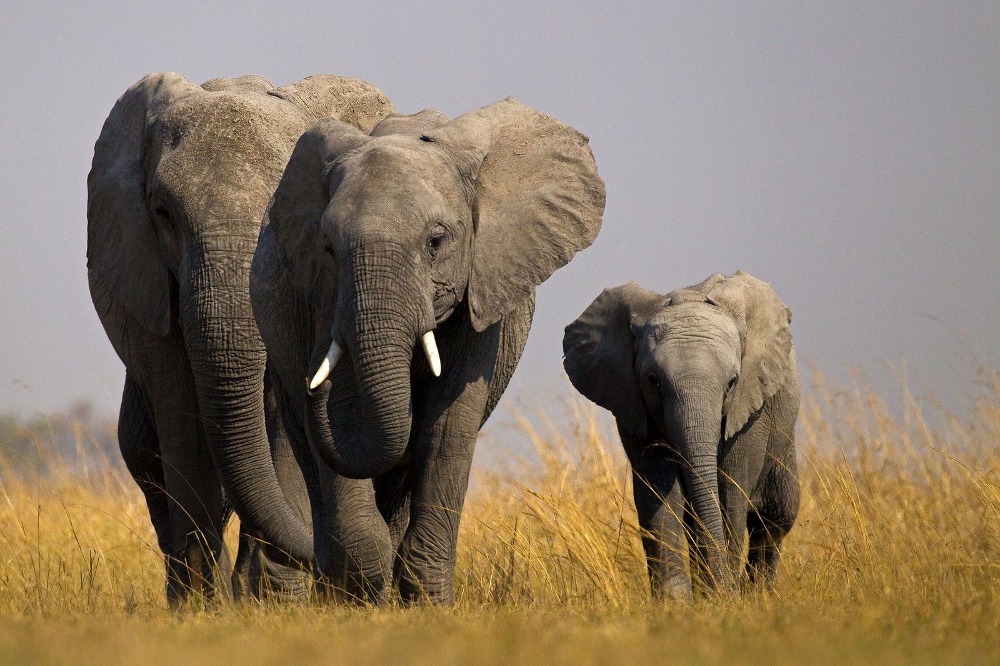

Especies animales emblemáticas de África
¿Sabías que...?
🌍 África alberga algunos de los animales más fascinantes y peligrosos del planeta.
León
Conocido como el "rey de la selva".
El león es un felino carnívoro que vive en manadas y se encuentra principalmente en África. Los machos se distinguen por su melena y son depredadores poderosos.
Jirafa
El animal más alto del planeta, con su largo cuello y patas.
Las jirafas son mamíferos, cada individuo posee un patrón de manchas único en su pelaje. A pesar de su altura, solo tienen siete vértebras en el cuello, igual que los humanos.
Elefante africano
El animal terrestre más grande del mundo.
Los elefantes son mamiferos que poseen una trompa muy versátil y viven en complejas estructuras sociales matriarcales en las sabanas y bosques africanos.